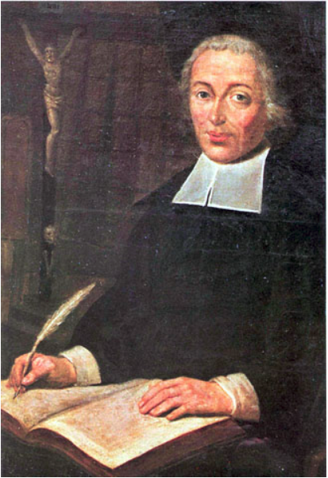

O Grupo “Temáticas Lassalistas”, mantido pelo PPG em Educação da Universidade La Salle, promove:
- estudos sobre a contribuição pedagógica de São João Batista de La Salle para a universalização da educação elementar das crianças, na transição entre o século XVII e XVIII, portanto, antes da concepção republicana de direito universal à educação.
- pesquisas sobre as diferentes iniciativas pedagógicas da educação popular ou, pelo menos, da educação de crianças oriundas de famílias urbanas trabalhadoras (artesãs) e pobres, promovidas pela rede de Escolas Cristãs dos Irmãos lassalistas na França pré-revolucionária até a atualidade.
- pesquisas trans e/ou interdisciplinares entre educação e outras ciências acerca da espiritualidade cristã a partir da qual se concebe uma antropologia que justifica a necessidade de a sociedade universalizar a educação escolar